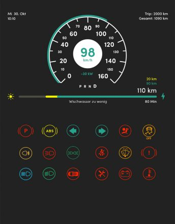

La sécurité est une chose primordiale pour la start-up allemande. Par conséquent, la voiture solaire Sion possède des freins ABS, un matériel d'alarme, des airbags ainsi qu'un système de contrôle électronique de la stabilité (ESC) pour réduire le pourcentage de collisions graves et avoir assurément une meilleure conduite.
Sur le tableau de bord, contrairement aux voitures classiques avec un compte-tours ou bien une jauge de carburant, nous avons là un écran nous montrant la vitesse et le niveau de charge actuel. De plus, il y a un affichage continu du nombre de kilomètres supplémentaires générés par le système viSono.
Tableau de bord original

Au-delà de sa motorisation 100% électrique, la Sion propose plusieurs innovations :
breSono
Un filtre composé de mousse végétale recyclant l’air de l’habitacle est intégré dans la planche de bord. Il élimine également l'humidité de l'air et désembue donc le pare-brise lorsqu'il fait froid et humide ; ce qui améliore la visibilité au volant.
Mousse végétale
biSono
Un système de charge bidirectionnel permettant à la voiture de se servir de l’énergie embarquée à bord de la batterie pour alimenter un appareil électrique.
Ainsi, grâce à une simple prise domestique, les appareils électroniques peuvent utiliser la Sion pour se recharger avec une puissance limitée à 2.7 kW.
Charge bidirectionnel
viSono
Des panneaux photovoltaïques directement intégrés à la carrosserie. Ce système solaire présente 330 cellules photovoltaïques qui sont en silicium monocristallines. S’étalant sur une surface de 7.5 m², ils permettent ainsi de générer une puissance maximale de 1.204W avec une efficacité de 24%, soit suffisamment d’énergie pour gagner jusqu’à 30 km d’autonomie par jour.